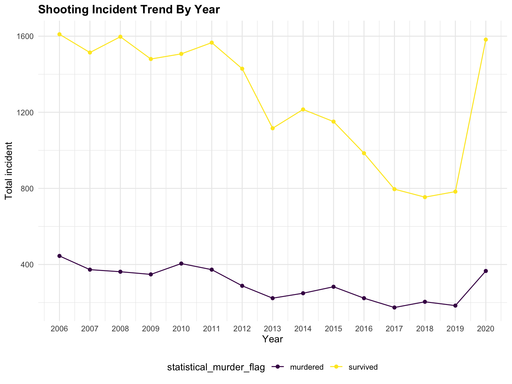
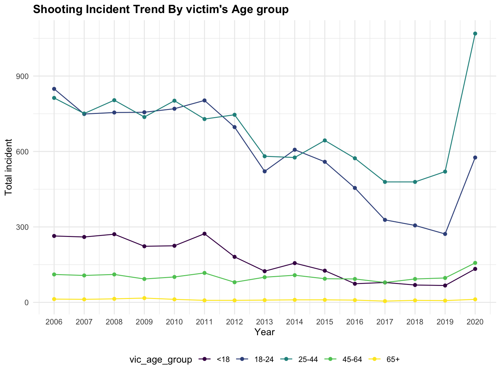
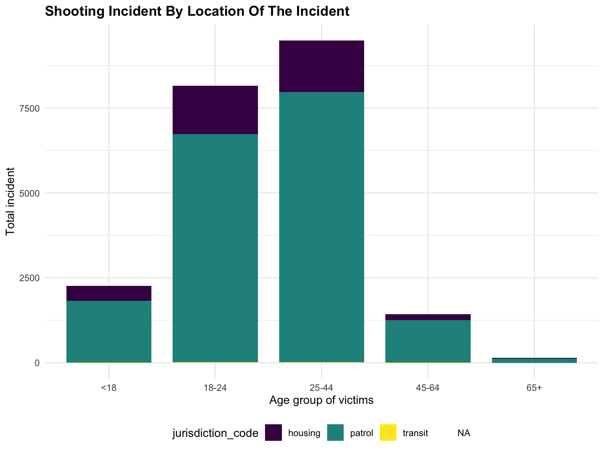
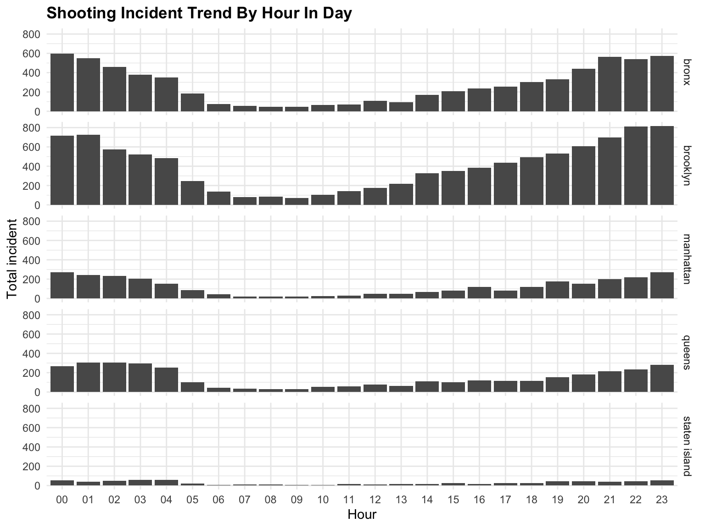
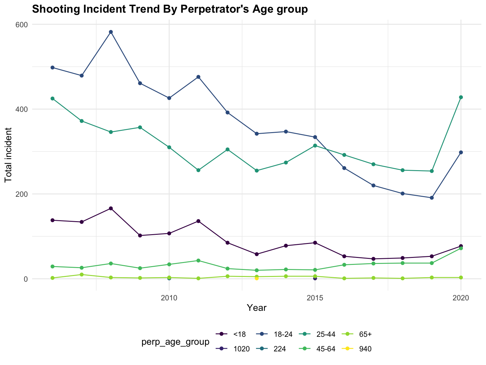
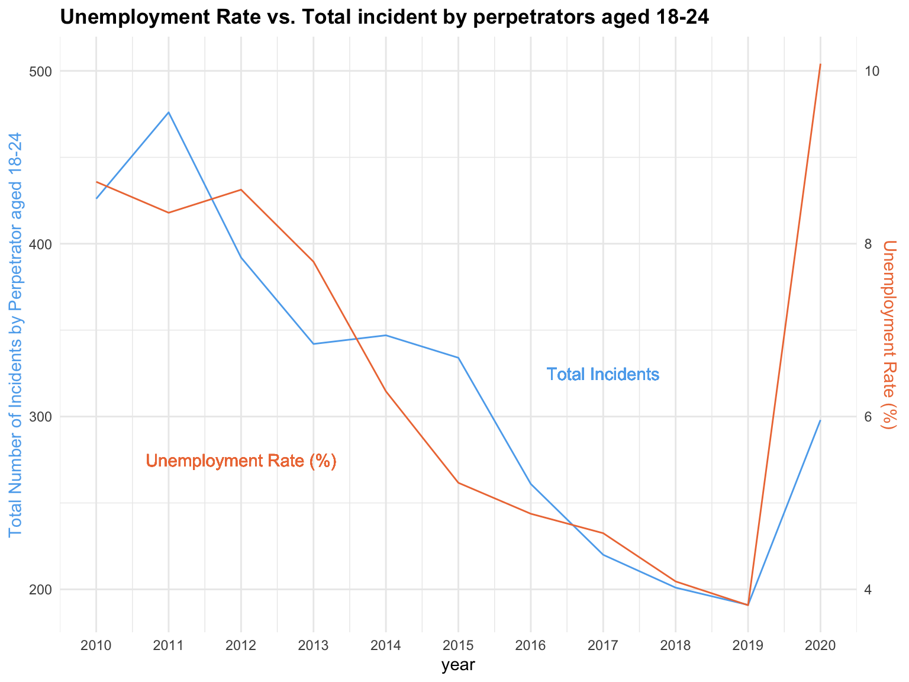

Descriptive Analysis
Overall glance
At the very beginning, let’s have a overall glance at the shooting incidence and focusing on the most serious issue, which is the amount of death on shooting incident from 2006 to 2020 in New York City.
year_plot =
data_hist %>%
filter(year >= 2006 ) %>%
group_by(year, statistical_murder_flag) %>%
summarise(n = n()) %>%
ggplot(aes(x = year, y = n, color = statistical_murder_flag)) + scale_x_continuous(breaks = seq(2006, 2020, by = 1)) +
geom_point() + geom_line() +
labs(x = "Year",
y = "Total incident",
title = "Shooting Incident Trend By Year"
)
year_plot
Murdered shooting incidents are much less than survived shooting incident. From 2006 to 2011, the survived shooting incidents were steadily fluctuate around 1500 and murdered shooting incidents were steadily fluctuate around 400.Both types of the shooting incidents were decreasing gradually from 2010 to 2019. However, there is a huge dramatically increase in 2020. We suspect it might be influenced by the outbreak of COVID-19 which led to a raise in unemployment and panic. We will do more statistical analysis on that later.
Now, let’s take a closer look on more details about the victims.
Victim
Race
vic_race_plot =
data_hist %>%
filter(year >= 2006,
vic_race %in% c("black","white hispanic","black hispanic","white","asian / pacific islander","white")) %>%
group_by(year, vic_race) %>%
summarise(n = n()) %>%
ggplot(aes(x = year, y = n, fill= vic_race) ) + scale_x_continuous(breaks = seq(2006, 2020, by = 1)) +
geom_bar(width = 0.8, stat = "identity") +
labs(x = "Year",
y = "Total incident",
title = "Shooting Incident Trend By Victim’s Race")
vic_race_plot
The majority of victim are black. In 2010, 2011 and 2014, white people are the second highest number of victim. The rest of years, white hispanic are the second most among all victim’s race.
Sex
vic_sex_plot =
data_hist %>%
filter(year >= 2006,
vic_sex != "unknown") %>%
group_by(year, vic_sex) %>%
summarise(n = n()) %>%
ggplot(aes(x = year, y = n, fill = vic_sex, color = vic_sex)) + scale_x_continuous(breaks = seq(2006, 2020, by = 1)) +
geom_point() + geom_line() +
labs(x = "Year",
y = "Total Incident",
title = "Shooting Incident Trend By Victim’s Sex")
vic_sex_plot
Male victims are the majority and female victims have a very small proportion among the total victims in nyc across 2006 to 2020.
Age
vic_age_plot =
data_hist %>%
filter(year >= 2006,
vic_age_group != "NA",
vic_age_group != "UNKNOWN"
) %>%
group_by(vic_age_group, year) %>%
summarise(n = n()) %>%
ggplot(aes(x = year, y = n, color = vic_age_group)) + scale_x_continuous(breaks = seq(2006, 2020, by = 1)) +
geom_point() + geom_line() +
labs(x = "Year",
y = "Total incident",
title = "Shooting Incident Trend By victim's Age group"
)
vic_age_plot
The proportion of age group under 18 and 45-64 have been keeping consistently low across 2006 to 2020, and there are nearly zero incidence for age group over 65. From 2006-2014, age group 18-24 and age group 25-44 have the highest proportion among the shooting incident. But since 2015, the amount of group 18-24 victims have been decreasing rapidly and become the second highest group among the total shooting incident. 18-24 usually is the age to graduate from high school and enter to college, this decrease may referring to some educational policy from 2015.Then we want to see what happened in perpetrator later.
Place
jurisdiction_code_plot=
data_hist %>%
filter(year > 2006,
vic_age_group != "NA",
vic_age_group != "UNKNOWN") %>%
group_by(jurisdiction_code, vic_age_group) %>%
summarise(n = n()) %>%
ggplot(aes(x = vic_age_group, y = n, fill = jurisdiction_code)) +
geom_bar(width = 0.8, stat = "identity") +
labs(x = "Age group of victims",
y = "Total incident",
title = "Shooting Incident By Location Of The Incident"
)
jurisdiction_code_plot
Most of the shooting incidents happened in the patrol, some of the shooting incidents in housing and only few cases were on transit.
Hour in a day
incident_by_hour =
data_hist %>%
filter(year >= 2006) %>%
group_by(hour) %>%
mutate(n = n()) %>%
ggplot(aes(x = hour, group = n)) +
geom_bar(position = "dodge") +
facet_grid(rows = vars(boro)) +
labs(x = "Hour",
y = "Total incident",
title = "Shooting Incident Trend By Hour In Day"
)
incident_by_hour
Brooklyn has most shooting incident, then is bronx. Staten island has least shooting incidents since it does not have much population. Most of the shooting incidents happened at night and very early in the morning. For Bronx and Brooklyn, the shooting incidents are gradually increasing after 12pm and reach to peaks around 10pm to 11pm. The shooting incidences in the morning are not as high as the shooting incidents at night. For queens and manhanttan, the shooting incidents in the morning reach to the highest peak and have a noteworthy amount until 5 am. We will provide more statistical analysis about which borought is the most dangerous in next section.
Perpetrator
Age
perp_age_plot =
data_hist %>%
filter(year >= 2006,
perp_age_group != "NA",
perp_age_group != "unknown"
) %>%
group_by(perp_age_group, year) %>%
summarise(n = n()) %>%
ggplot(aes(x = year, y = n, color = perp_age_group)) +
geom_point() + geom_line() +
labs(x = "Year",
y = "Total incident",
title = "Shooting Incident Trend By Perpetrator's Age group"
)
perp_age_plot
From the plot we observed an interesting trend that we explored further. From 2006-2014, majority perpetrator are from age group 18-24 in the shooting incident. However, since 2015, the amount of group 18-24 perpetrator have been decreasing rapidly. We hypothesized that this decrease might be related to factors such as employment, which closely relates to this age group. That is, maybe people aged from 18-24 are having better chance of getting employed after 2015, which potentially stables the society and decreases shooting incident rates.
To explore our hypothesis, we acquired unemployment rate data from 2010 to 2020 and mapped it with the total incidents conducted by perpetrators, in age group 18-24, in this time interval.
data = read_csv("data/NYPD_Shooting_Incident_Data_Clean.csv") %>%
filter(year >= 2010, perp_age_group == "18-24") %>%
group_by(year) %>%
summarise(n_obs = n())
data_unem = read_csv("data/unemployment/unemployed_complete.csv")%>%
select(-...1) %>%
group_by(year) %>%
summarise(mean_rate = mean(unemployment_rate))
data_ana = left_join(data,data_unem, by = c("year")) %>%
mutate(mean_rate = mean_rate*100)
data_ana %>%
ggplot() +
geom_line(mapping = aes(x = year,y = n_obs), color = "steelblue2")+
geom_line(mapping = aes(x = year,y = mean_rate*50), color = "sienna2")+
scale_x_continuous(limits = c(2010, 2020), breaks = seq(2010, 2020, by = 1))+
scale_y_continuous(
# First axis
name = "Total Number of Incidents by Perpetrator aged 18-24",
# Add a second axis and specify its features
sec.axis = sec_axis(trans = ~ ./50,name = "Unemployment Rate (%)")
) +
geom_text(x = 2012, y = 275, label = "Unemployment Rate (%)", color = "sienna2") +
geom_text(x = 2017, y = 325, label = "Total Incidents", color = "steelblue2")+
theme(
axis.title.y = element_text(color = "steelblue2"),
axis.title.y.right = element_text(color = "sienna2")
) +
labs(title = "Unemployment Rate vs. Total incident by perpetrators aged 18-24")
In the plot, the blue line represent the total incident conducted by perpetrator in the age group 18-24 throughout each year. The orange line represent the unemployment rate (in percentage), throughout the years. From the plot, we can see that generally the number of incidents decreases as unemployment rates decrease; and the number of incidents increase as unemployment rates increases as well. So, we can infer that there might be a correlation between the number of shooting incidents and unemployment rates during 2010 to 2020. However, although we can see that the total incident conducted by perpetrator aged 18-24 decreased rather rapidly after 2015, the slope of the unemployment rate is not as steep, or even not as steep as it was during 2012 to 2015. Therefore, unemployment rate is not the only factor that influenced the total incident by 18-24 years old perpetrators, our current hypothesis does not stand. Further research is required.